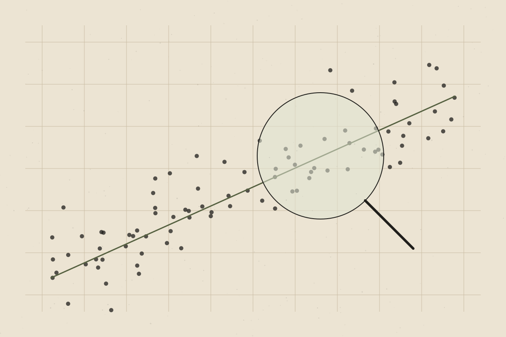

How to Evaluate a Health Claim You See Online
A practical, eight-question checklist for reading health headlines and social media posts more clearly.

Every day, people encounter health claims that sound confident and specific: this food fights inflammation, that habit rewires your brain, this supplement fixes your hormones. Some are reasonable summaries of evidence. Many are not. You don’t need scientific training to start telling the difference — just a few good questions.
1. Who is making the claim, and what do they gain?
Consider the person’s relevant expertise and whether they sell a product, programme or service connected to the claim. A conflict of interest doesn’t make a claim false, but it is a reason to look more carefully.
2. What kind of evidence is behind it?
Not all evidence carries the same weight. Roughly, from less to more reliable for questions about whether something works in people:
- Personal stories — useful for understanding experience, weak for proving cause and effect.
- Mechanisms and lab or animal studies — important for generating ideas, but often don’t translate to humans.
- Observational studies — show associations in real populations, but can’t easily rule out other explanations.
- Randomised controlled trials — better for testing cause and effect.
- Systematic reviews — combine the best available studies on a question.
Well supportedThis general hierarchy is widely used in evidence-based practice, though the best type of evidence depends on the question being asked.
3. Is it correlation or causation?
If people who do X tend to have outcome Y, that doesn’t mean X causes Y. Both might be linked to a third factor, such as income, overall health or age. Watch for words like “linked to” being reported as “causes.”
4. How big is the effect, really?
A headline might say a risk “doubled.” If the original risk was very small, doubling it may still mean a small absolute change. Look for absolute numbers, not just relative ones.
5. Who was studied?
A result in mice, in elite athletes, or in a small group of people with a specific condition may not apply to you. Check whether the people studied resemble the people the claim is aimed at.
6. Does it fit with the wider body of evidence?
One new study rarely overturns a large body of research. Claims that dismiss everything that came before, or say “doctors don’t want you to know this,” deserve extra scepticism.
7. Is the language proportionate?
Words like “cure,” “detox,” “miracle,” “toxic” and “guaranteed” are warning signs. Careful sources describe uncertainty, limitations and who something may not suit.
8. What would it cost you to be wrong?
Trying a new vegetable based on a weak claim carries little risk. Stopping a prescribed medication, spending large amounts of money, or delaying medical care on the basis of a weak claim carries much more.
Quick checklist
- Who says so, and what do they gain?
- What type of evidence supports it?
- Association or cause?
- Absolute or relative numbers?
- Were the people studied like me?
- Does it fit the wider evidence?
- Is the language proportionate?
- What is the risk if it’s wrong?
The bottom line
You don’t need to read every study yourself. Asking a few consistent questions — and being comfortable with “we don’t know yet” — goes a long way towards navigating health information calmly and wisely.
References & further reading
References below are placeholders. Each must be replaced with a verified source before publication.
- [Reference placeholder] — add a verified source on: levels of evidence in evidence-based medicine. Include authors, year, title, journal and DOI or link.
- [Reference placeholder] — add a verified source on: absolute versus relative risk communication. Include authors, year, title, journal and DOI or link.
- [Reference placeholder] — add a verified source on: guidance on reading health news (e.g. a public health body). Include authors, year, title, journal and DOI or link.